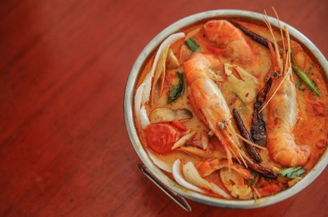

ต้มยำกุ้งมะพร้าวอ่อน

วัตถุดิบส่วนผสม
- กุ้งก้ามกราม 500 กรัม
- น้ำมะพร้าว 2 ลูก
- มะพร้าวอ่อน 1 ถ้วยตวง
- พริกขี้หนู ¼ ถ้วยตวง
- ข่า 20 กรัม
- ตะไคร้ 3 ท่อน
- เห็ดนางฟ้า 1 ถ้วยตวง
- น้ำพริกเผา 30 กรัม
- น้ำปลา 4 ช้อนโต๊ะ
- นมข้นจืด ¼ ถ้วยตวง
- น้ำมะนาว ¼ ถ้วยตวง
- ใบมะกรูด 5 ใบ
- ผักชี สำหรับตกแต่ง

วิธีทำ
- ตั้งหม้อเปิดไฟใส่น้ำมะพร้าวตามด้วย ตะไคร้ ข่า และเห็ด รอให้น้ำเดือด แล้วใส่พริกขี้หนูตามลงไป
- ปรุงรสด้วยน้ำปลา รอให้น้ำเดือด แล้วใส่กุ้ง ต้มให้กุ้งสุก
- ใส่น้ำพริกเผา นมสด และเนื้อมะพร้าวลงไป คนให้พอเข้ากันแล้วปิดไฟ
- ปรุงรสด้วยน้ำปลา รอให้น้ำเดือด แล้วใส่กุ้ง ต้มให้กุ้งสุก
- ใส่น้ำพริกเผา นมสด และเนื้อมะพร้าวลงไป คนให้พอเข้ากันแล้วปิดไฟ
ที่มา https://www.wongnai.com/recipes/spicy-prawn-soup-with-young-coconut
คุณค่าทางโภชนาการ
| ไขมันทั้งหมด |
5.5 g |
9% |
| คลอเรสเตอรอล |
1148.9 mg |
383% |
| โซเดียม |
8464.1 mg |
75% |
| คาร์โบไฮเดรตทั้งหมด |
52.5g |
18% |
| โปรตีน |
161.9g |
324% |
| วิตามินเอ |
10.605 % |
| แคลเซียม |
51.975 % |
| วิตามินบี 12 |
4.32 % |
| ไทอามิน |
6.43 % |
| ไนอาซิน |
13.105 % |
| วิตามินเค |
23.105 % |
| ฟอสฟอรัส |
163.305 % |
| วิตามินซี |
68.27 % |
| เหล็ก |
69.915 % |
| วิตามินบี 6 |
19.61 % |
| แมกนีเซียม |
100.04 % |
| ไรโบพลาวิน |
15.585 % |
| วิตามินอี |
0.605 % |
| ซิงค์ |
85.375 % |